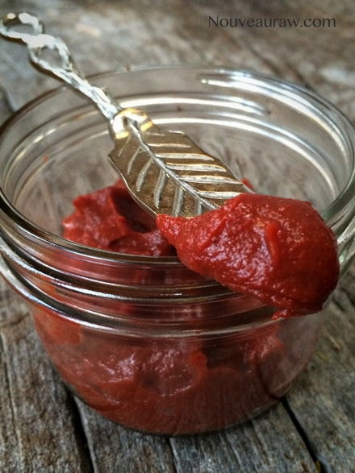

Homemade Tomato Paste

There have been times where I need a good tomato paste. The deep rich, concentrated flavor of tomato that takes a recipe from zip to zing! When one of my raw food dishes requires tomato, I use either fresh tomatoes and sometimes I rely on sun-dried tomatoes. But even with those, sometimes I am missing that… zing, zip, tang, pow!
Until now, I just considered myself sort-of-out-of-luck. I had used tomato powder many years ago when I stumbled upon it at a health food store but soon forgot about it because it wasn’t something that I could readily get my hands on.
On-line, I have found my answer for creating a rich tomato paste… tomato powder. I provided a link below in the ingredient list on the one that I use.
Tomato powder contains a natural antioxidant called lycopene, which has been shown to be protective against several age-related diseases such as colorectal, prostate, breast, endometrial, lung, and pancreatic cancers, as well as some cardiovascular diseases.
It is also an excellent source of dietary fiber, which has also been shown to reduce “bad” cholesterol levels, regulate blood sugar levels. These are good things to know as you go to make up a yummy batch of rich tomato paste!
Ingredients:
Yields roughly 7 oz
Preparation:
- Place the tomato powder and water in a small bowl and whisk together with a fork making sure that you work out all lumps.
- Store in the fridge for up to 1 week.
- For an idea on how to use tomato paste, check out my Raw Russian Salad Dressing recipe.

© AmieSue.com